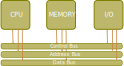
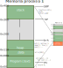
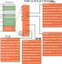
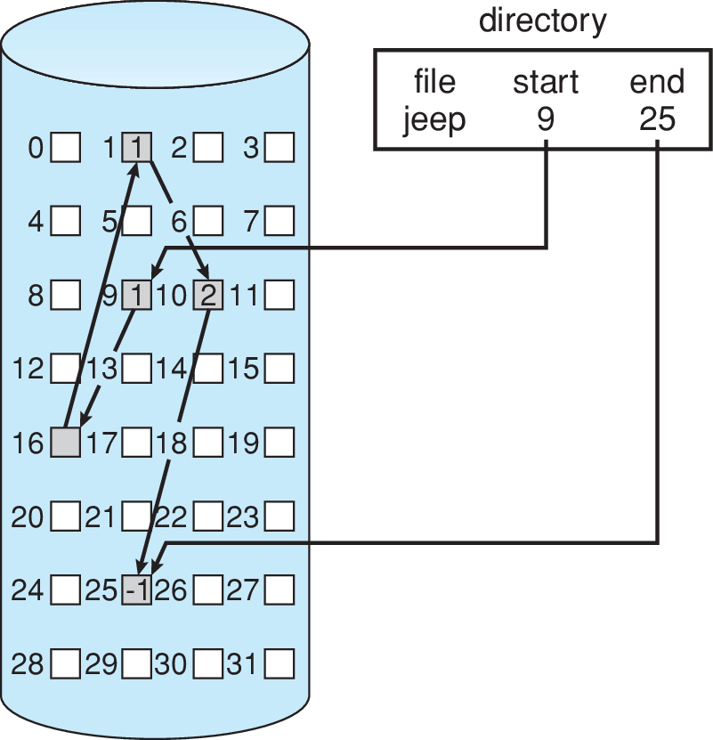

Sistemas Operativos y Redes
Sistemas Operativos
(o ¿Cómo funciona un computador?, parte II)
Semestre 2022-1
Cristian Ruz - cruz@ing.puc.cl
Departamento de Ciencia de la Computación
Pontificia Universidad Católica de Chile
¿Para qué un Sistema Operativo?
¿Qué ocurre cuando interactuamos con el computador?
Queremos ejecutar un código como esto

más bien esto
Y para eso tenemos:
Source: https://www.soundonsound.com/techniques/installing-new-pc-motherboard
Hardware ejecuta ciclos de instrucciones
- Fetch
- Decode
- Execute
Hardware ejecuta programas (código) compilado
- ¿Cuál programa? ¿En qué orden?
- ¿Un programa a la vez?
- ¿En qué región de memoria?
- ¿Cómo utiliza los dispositivos de I/O?

El computador es una máquina programable (léase "reconfigurable") …
… pero electrónicamente compleja

Cuando ejecutamos un programa ...
- No nos preocupamos del hardware del computador
- No tenemos que esperar que otro programa termine para que el nuestro ejecute
- No especificamos qué región de la memoria va a utilizar
- No decidimos en que bloques del disco está almacenado
Porque afortunadamente existe el Sistema Operativo 😅
Afortunadamente también tenemos compiladores, pero en este curso alabaremos al sistema operativo
Estructura de un Sistema Operativo
¿Dónde vive el Sistema Operativo?
Sistema Operativo ES software
Sistema Operativo habla con el hardware
El Sistema Operativo es nuestro servidor más importante
- Nos protege de los detalles del hardware
- ¿Un core, dos core?, ¿4GB RAM?, ¿disco SSD?, … úselo no más, yo me encargo
- Nos permite compartir recursos con otros programas
- ¿Quiere navegar, tocar música, jugar WoW, compilar su tarea, todo al mismo tiempo? No se preocupe
- Nos ofrece servicios para hacer más cómodo el uso del hardware
- Escritura y lectura de disco, envío de mensajes por red, acceso a su pendrive USB, y todo eso … con una interfaz gráfica
Nos permite usar el computador 😃
¿Como no querer/estudiar a nuestro sistema operativo?


El sistema operativo es un software complejo
¿Cómo se invocan los servicios del sistema operativo?
Sistema operativo provee una interfaz de llamadas al sistema (syscalls)
- Cada vez que un programa desea solicitar algo al sistema operativo, debe invocar una syscall
- "Por favor, sistema operativo, haz esto por mi"
- Cada sistema operativo puede proveer un conjunto distinto de syscalls
- Sistemas operativos proveen bibliotecas (libraries) en algún lenguaje de programación (C) para invocar syscalls.
Sin embargo, cuando interactuamos con el computador no escribimos syscalls
El sistema operativo es un software complejo
¿Cómo interactuamos con el sistema operativo?
Sistema operativo provee interfaces de usuario (user interface) que enmascara syscalls
- Ofrecen un entorno más "amigable" para usar el computador
- ¿Son parte del sistema operativo?
Distintas maneras de interactuar con el sistema operativo
- Interfaces gráficas: GUI (Graphical User Interface)
- Intérprete de comandos (Command Line)
- Batch (lotes): secuencias de comandos no-interactivas

El sistema operativo es un software complejo
Interfaces gráficas: GUI
GUIs ofrecen un entorno basado en abstracciones (ventanas, punteros) para interactuar con el sistema operativo


El sistema operativo es un software complejo
Intérprete de comandos / linea de comandos / command line
menos preciso: shell, terminal, consola, xterm, prompt
- UNIX/Linux/MacOSX:
sh,csh,tcsh,ksh,bash,zsh - MS-DOS/Windows:
COMMAND.COM,cmd.exe, PowerShell


El sistema operativo es un software complejo
El kernel (núcleo, supervisor)
El código fundamental del sistema operativo.
- Es software
- Suele ser lo más pequeño posible (o no)
Tiene completo control sobre el sistema (hardware)
- Es el único programa que ejecuta en un modo privilegiado
- También conocido como modo monitor, modo kernel, modo sistema
- Todo lo que no es parte del kernel, ejecuta en modo usuario
Sistema operativo incluye herramientas (programas) que facilitan la labor del kernel, pero que no son fundamentales

Sistema Operativo = Kernel + Programas del Sistema
¿Cómo funciona el Sistema Operativo?
Interrupciones
Los Sistemas Operativos son manejados por interrupciones / traps.
Mientras nadie lo llame, el sistema operativo no hace nada.
- Programa de usuario genera un trap: interrupción generada por software
- Control pasa al sistema operativo: kernel space
- Sistema operativo ejecuta servicio solicitado por el usuario
- Una vez terminado el servicio, sistema operativo regresa el control al programa de usuario
Syscalls: llamadas al sistema
Interfaz para solicitar servicios al sistema operativo
- Manera precisa de llamar al sistema operativo es altamente dependiente del hardware
- Sistemas proveen bibliotecas que implementan syscalls

¿Qué hace el sistema operativo ante el siguiente comando?
copy source.txt dest.txt- Abrir
source.txt(stat,open) - ¿existe?, ¿tiene permiso de lectura?, …
- Abrir
dest.txt(stat,open) - ¿existe?, ¿se reemplaza?, ¿se puede escribir?, …
- Leer
source.txthacia alguna región de memoria (mmap,read) - Escribir desde la memoria hacia
dest.txt(write) - Liberar la memoria y guardar los archivos (
munmap,close)

Todas estas acciones requieren llamadas al sistema
Pruebe con:
strace cp source.txt dest.txtProcesos
Composición: ¿Qué hay en un Proceso?
- Código (
.text, información estática) - Datos (
.data): variables globales - Stack. Cada item del stack representa un llamado a función (call frame), y contiene:
- Parámetros
- Variables locales
- Lugar de retorno (donde estaba la ejecución anterior, PC)
- Heap. Memoria asignada dinámicamente (durante la ejecución)

Representación: ¿Cómo lo ve el Sistema Operativo?
Process Control Block (PCB)
Sistema Operativo mantiene Tabla de Procesos.
Información de cada procesos almacenada en su PCB
- Estado
- Identificador (PID, Process ID)
- Program Counter (PC)
- Registros de CPU: estado de ejecución
- Información de scheduling: prioridades, tipo de cola, …
- Información de memoria: límites, tabla de páginas/segmentos, …
- Contabilidad (accounting)
- Información de I/O: archivos y dispositivos abiertos, …
PCB pueden tener mucha información. Miremos en
include/linux/sched.h
Un proceso en ejecución puede cambiar de estado
- New : En creación
- Running : En ejecución
- Waiting : Esperando (I/O, signal)
- Ready : Listo para ejecutar. Esperando asignación de CPU
- Terminated: Ejecución terminada
Scheduling
CPU Scheduling a.k.a. Planificación de CPU
Tenemos:
- Múltiples procesos en memoria (multiprogramación), ordenados en una tabla de PCBs
- Algunos procesos en estado ready (listos para ejecutar)
- CPU que puede atender solo un proceso a la vez
Y queremos:
- Multitasking: asignar tiempo a múltiples procesos
Sistema Operativo debe elegir cuál de todos los procesos en estado ready debe ejecutar a continuación: scheduling
Responsable: scheduler, a.k.a. planificador
Scheduling puede ser visto como un sistema de manejo de colas

Memoria
Direcciones de Memoria
- Un gran arreglo de bytes
- Cada uno con su propia dirección
Al principio …

Con multiprogramación …
Paginación
Problema: un espacio de direcciones muy grande.
- Idea 1: Dividir el espacio de direcciones en segmentos
- Idea 2: Que los segmentos sean del mismo tamaño: páginas de memoria
Paginación
- Espacio virtual: páginas
- Espacio físico: frames (marcos)
- Páginas y frames del mismo tamaño
Sistema con 128B RAM
- Espacio virtual (lógico) de 64B.
- Espacio físico de 128B.
- Páginas (y frames) de 16B.

¿Cuántos accesos a memoria?
Dirección de tabla de páginas se guarda en PCB, como PageTableBaseRegister (PTBR)
VPN = (virtualAddress & VPN_MASK) >> VPN_SHIFT;
PTEAddress = PageTableBaseRegister + (VPN * sizeof(PTE));
PTE = ReadMemory(PTEAddress);
// está en memoria
if(!PTE.valid)
raise(SEG_FAULT);
// verificación de permisos
else if(PTE.protected)
raise(PROTECTION_FAULT);
// Acceso OK
else {
offset = virtualAddress & OFFSET_MASK;
physicalAddress = (PTE.PFN << PFN_SHIFT) | offset;
register = ReadMemory(physicalAddress);
Sistemas de Archivos
Archivos
Colección de información en almacenamiento secundario
- Unidad mínima de almacenamiento para el usuario
- Agrupación lógica de bytes
- Abstracción
Contenido: cualquier cosa
- Significado está determinado por la forma en que se utiliza su contenido
- Texto, imagen, código fuente, código binario (ejecutable), ...
Directorios
Archivos se organizan en una estructura de directorios (otra abstracción)
- Nombre (low-level name): inode number
- Contiene lista de pares: (readable name, low-level name)
- Puede contener otros directorios: jerarquía o árbol de directorios
- Jerarquía empieza en una raíz: root, o
/ - Usa un separador:
/ - Unidades son subdirectorios
- Nombres con subdirectorios: pathname o ruta
- Ruta absoluta: Absolute path
/foo,/bar/bar,/bar/foo/bar.txt- Ruta relativa: Relative path
foo,foo/bar.txt,foo/bar.txt
- Ruta absoluta no puede repetirse

Asignación contigua
- Archivo de $n$ bloques: $b, b+1, \ldots b+n-1$
- Fácil de acceder a siguiente bloque
- -Problema: fragmentación externa
- Require operaciones de compactación (defragmentación)

Asignación enlazada (linked)
- Almacena punteros a bloque siguiente
- Ej: bloque de 512 bytes, solo puede guardar 508 bytes. Se pierde espacion.
- No requiere tamaño inicial de archivo. Puede crecer.
- -Acceso solo secuencial.
- Alternativa: almacenar clusters de bloques en lugar de bloques individuales (frag. interna)
- -Vulnerable a falla de un bloque

Asignación enlazada (linked): FAT
- FAT: File Allocation Table
- Tabla al inicio del disco con una entrada por archivo
- Último cluster almacena EOF (end-of-file)
- +Mejor acceso aleatorio
- -Limitado por tamaño de tabla (para FAT32, 4GB por archivo)

Asignación indexada
- Archivos contienen index block
- Index Block contiene bloques del archivo
- Último cluster almacena EOF (end-of-file)
- +Acceso aleatorio sin frag. externa
- Se pierde espacio por tamaño de index block

Asignación indexada: tamaño del index block
- Esquema enlazado: última entrada de index block apunta a otro index block
- Índice multinivel: similar a tablas de página multinivel
- Ej: blocks de 4KB, permiten 1024 punteros (de 32-bit)
- Dos niveles permiten direccionar $1048576$ bloques $\to 4$GB
- Esquema combinado: primeros $p$ punteros son bloques directos, los siguientes apuntan a bloque de índice simple, los siguientes a bloque de índice doble, etc